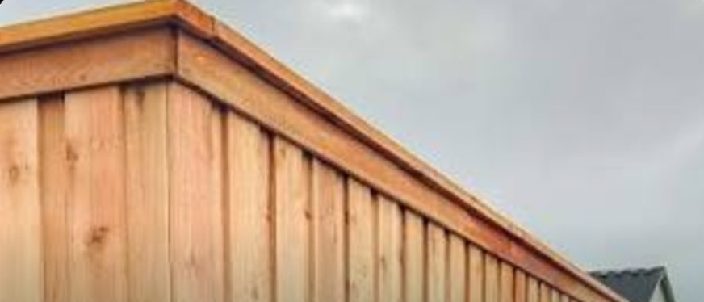
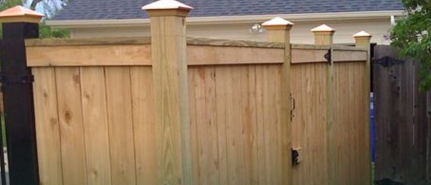

Stain that protects the wood for years, caps and trim that give the line an architectural edge, and lighting that keeps it glowing after dark — every finish applied by our own crews, never rushed.

We use oil-based stain that penetrates deep into the wood instead of sitting on the surface — so it resists cracking, chipping, and peeling as the fence weathers. Our crew masks the surrounding landscaping, applies the finish evenly along the full line, and leaves the site clean.
Cap and trim work does double duty — it shields exposed picket tops from sun and rain, and it gives the whole line a custom, high-end profile you can see from the street.

A cedar flat cap with a single trim board covers the picket tops, sheds water, and draws a clean, continuous line along the fence.

Two stacked trim boards under the cap create a layered, architectural shadow line — our most refined cap detail.

Decorative lattice above the pickets adds height, airflow, and style — extra privacy without a solid wall of wood.

Cedar, decorative metal, and copper post caps protect the exposed end grain of each post while adding a jewelry-like finishing detail along the line.

Post-mounted solar lights charge all day and softly light the fence line at night — no wiring required, and serious curb appeal after dark.
A fence is a real investment in your property. Finishing is how you defend it — and how you make sure it still looks like the day we built it.
Stain seals the wood against rain, sun, and Oklahoma's freeze-thaw swings, while caps shield the vulnerable end grain up top.
Sealed, capped wood resists warping, splitting, and rot — so the fence stays straight and solid for more years of service.
Untreated cedar fades to gray. A quality penetrating stain holds its warm, rich tone instead of washing out in the sun.
A finished, well-kept fence frames the whole property — a detail buyers and neighbors notice from the street.
New build or an existing fence that needs stain, caps, or lighting — we'll walk the line with you and quote it free.